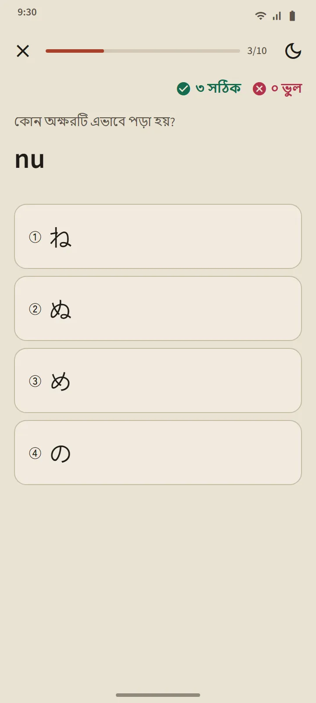

একটি ছক, যা পাঠের তালিকাও
হিরাগানা ও কাতাকানার পাতা খোলে হোম স্ক্রিনের “জাপানি ভাষার ভিত্তি” অংশ থেকে। ওপরের সারাংশ কার্ড গুনে দেখায় আপনি কতগুলো অক্ষর জানেন; নিচের ছকটি তিনটি দলে: মৌলিক (46টি অক্ষর), চিহ্নযুক্ত (দাকুতেন ও হান্দাকুতেন) এবং যুক্ত (きゃ, しゅ, ちょ ইত্যাদি)। ভরাট ঘরের মানে জানা হয়েছে, শুধু রেখার ঘরের মানে চলমান।

প্রতি সারিতে একটি পাঠ
ছকের প্রতিটি সারি একটি পাঠ: ট্যাপ করে শোনার মতো অক্ষরের ঘর, রোমাজি, জানা হওয়ার চিহ্ন, প্রতিটি অক্ষরের স্ট্রোক ক্রম এবং “যে শব্দগুলো আপনি পড়তে পারেন”: ওই সারি পর্যন্ত শেখা অক্ষর দিয়েই তৈরি আসল অভিধানের শব্দ, যার রোমাজি একটি বোতামের পেছনে লুকানো থাকে যাতে আপনি আগে নিজে পড়ার চেষ্টা করেন। একটি “এই সারির কুইজ” বোতাম পাঠটি শেষ করে।

পড়ার নিয়ম
প্রতিটি ছকের শেষ দলে সেই নিয়মগুলো ব্যাখ্যা করা হয়েছে যেখানে নতুনরা হোঁচট খায়: হিরাগানায় ছোট っ ও দীর্ঘ স্বর; কাতাকানায় দীর্ঘ চিহ্ন ー, ছোট ッ এবং বিদেশি শব্দের যুক্তরূপ (ファ, ティ, ウィ)। প্রতিটি নিয়মের সঙ্গে পড়ার মতো উদাহরণ শব্দ আছে।
দশ প্রশ্নের কুইজ, সময়সূচি ছাড়া
কানা কুইজে তিন ধরনের প্রশ্ন: অক্ষর থেকে রোমাজি, রোমাজি থেকে অক্ষর এবং ধ্বনি থেকে অক্ষর। টানা তিনবার সঠিক উত্তর দিলে একটি অক্ষর জানা হয়েছে ধাপে যায়, আর একবার ভুল করলে শিখছি ধাপে ফিরে যায়। শব্দ ও কাঞ্জির মতো নয়, অক্ষরগুলোর সময়সূচি নতুন করে ঠিক হয় না: সবগুলো পড়তে পারলেই ছক শেষ। কুইজের সারাংশে দেখা যায় আপনার স্কোর, নতুন জানা অক্ষর এবং যেগুলো ভুল হয়েছে।

কোথা থেকে শুরু করবেন
অ্যাপটি প্রথমবার খুললে জিজ্ঞেস করা হয় আপনি শূন্য থেকে শুরু করছেন নাকি ইতিমধ্যে হিরাগানা পড়তে পারেন। আপনার উত্তর হোমে একটি পরামর্শ ঠিক করে: নতুনদের জন্য "হিরাগানা দিয়ে শুরু করুন", বাকিদের জন্য প্রথম 20টি শব্দ। শেষ করার মতো কোনো তালিকা নেই: একই কার্ড সব ফিচারের একটি ছোট টিউটোরিয়ালে নিয়ে যায়, আর যেকোনো সময় বন্ধ করা যায়।